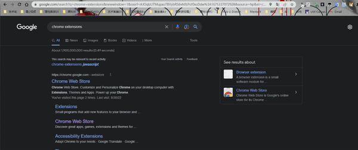

The mp1 Writeup
Last updated: 2023/1/24
Overview and Usage
Link to my extension
The extension "Little C-Shock" is a highlighting detection tool that catches users' text selection behavior and alerting them from doing so. The reason why it is named that way is because it is an on-going popular meme in China about a youtuber who looks very alike a movie actor who is super justical. The youtuber became trending sooner after he making short videos for ridiculous plots, overly justical characters, and funny lines and music usages. To enable the extension, open the link attached above. Simply download it, and load it by simply clicking "Load unpacked" button on the top left corner of chrome://extensions/ in your chrome website. When clicking the icon, a pop-up window will appear that allows you to switch the detection function on and off. Once it is enabled, simply select any text on your webpage, and an alert will pop-up.
Following is a gif on the extension's behavior.
Development Process
-
STPE 1: Firstly I have to setup my environment in order to program. Considering the content of this project, I created a new repository on github named as `Little C Shock`, the name of my extension, and clone to local directory.
-
STPE 2: Following the examples provided in class, I created the basic folders and files for the program, which are `manifest.json`, `popup\popup.html`, `popup\popup.css`, `popup\popup.js`, `content-script\conten.js`, and folders for my `images` and `media`.
-
STPE 3: I copied the template for `manifest.json` and modified the the objects accordingly, including "manifest_version", "name", "description", "version", "action", "permissions", and "content_scripts". These will be constantly adjusted as I go with the project. I set the "default_popup" to be "popup/popup.html" and created an icon in the base directory, which is set to "default_icon" so chrome could recognize it.
-
STPE 4: I go to the "chrome://extensions/" in my chrome browser, load my extension so I can constanly test out the performance later during the process. Once I changed something in my code, I can simply clicked the refresh button.
-
STPE 5: Then I wrote the popup.html and popup.css. I have a checkbox in my popup window so that the user could switch on and off the functionality.
-
STPE 6: I wrote the javascript for popup.js, with an event listener on the change of the checkbox element and a function to update the contentscript according to the state of the checkbox.
-
STPE 7: I wrote the javascript for content.js, with an event listener on the message sent to the content script as well as an event listener that listen to the "mouseup" action. In that way, the program can decide weather user selected text or not and prompt an alert.
-
Following is a gif on basic functionality of the extension.

-
STPE 8: Then, I wrote the sync method in both javascript files, so that it remembers users' choice on whether to enable the detection or not, meanwhile updating the manifest.json for the permissions.
-
STPE 9: Lastly, I wrote fix the styling of the css to make the popup window looks better and finish the writeup.
Issue Deep-Dive
Issue: When I try to uncheck the checkbox in my pop-up window and disable the functionality of the extension manually, the javascript did not allow me to do that. No matter how I check or uncheck the box, the checkbox would always display as unchecked every time I open the pop-up window, and the detection functionality would remain active.
Solution: I used console.log to monitor the progress of my program, and realize it never entered that particular method I wrote for sync the settings. I then looked into the example codes in comparison to my files, and figured out that I have the <script> tag inside the <head> instead of at the end of <body>. I might miss the part when it was mentioned in class, but after researching, I understood that the behavior was due to the fact that the script was loaded to early before the DOM finished establishing; Therefore, the script could not detect the elements coded. Everything was fixed after I moved the <script> linking.
Ideas and Future
- · More indications for the checking and unchecking behavior, such as sound, animation, etc.
- · Instead of a client alert, using a pop-up window on the web to point out user's highlight-text behavior.
- · Making it more fun of the extension, such as blacking out whatever user was selecting, or replacing them with other texts.
- · Detect clipboard (copy & paste behavior) instead of mere text selection.
- · Show different messages depend on the frequences that users highlight text.